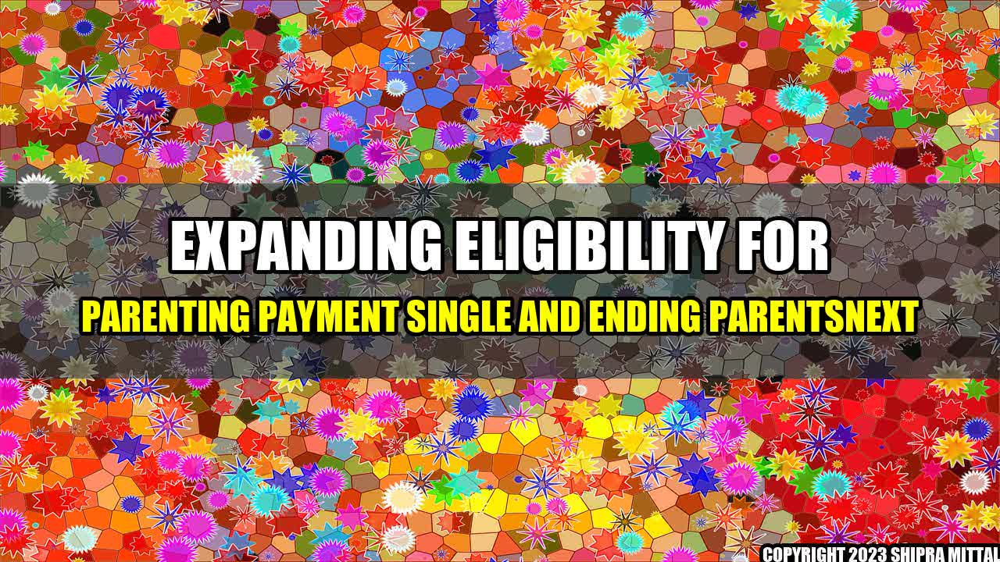

Expanding Eligibility for Parenting Payment Single and Ending ParentsNext
"Being a single parent is twice the work, twice the stress, and twice the tears, but also twice the hugs, twice the love, and twice the pride." - unknown
Being a single parent is tough. It's challenging enough to raise a child when you have a partner to share the workload with, but when you're doing it alone, it can be overwhelming. As a society, we should be doing more to support single parents and their families. That's why we need to expand the eligibility for the Parenting Payment Single and end ParentsNext.
What is the Parenting Payment Single?
The Parenting Payment Single is a payment by the Australian government aimed at supporting single parents. It provides financial assistance to single parents who are primary carers for their children and earn a low income or no income at all. It also offers additional support through the Family Tax Benefit and other entitlements.
| Criteria | Current Eligibility | Proposed Eligibility |
|---|---|---|
| Maximum Income Test | $62,575 per year | $75,000 per year |
| Assets Test | $616,000 | $720,000 |
| Age of Youngest Child | 8 years | 16 years |
| Study or Training Requirements | Must study or train when youngest child turns 6 | Removed |
As you can see from the table above, there are proposed changes to the eligibility criteria of the Parenting Payment Single. These changes will allow more single parents to access the support they need to provide for their families.
What is ParentsNext?
ParentsNext is a program by the Australian government aimed at helping single parents who receive the Parenting Payment Single to prepare for work once their children reach school age. It requires them to attend appointments with a job counselor, and participate in activities such as training courses and work experience. Failure to comply with the requirements can result in their payments being cut off.
Why ParentsNext Should End
While the intention of ParentsNext may be good, the reality is that it often does more harm than good. Many single parents find the program punitive and invasive. They feel that they are being harassed and treated unfairly, and that the program has little to offer in terms of actual support.
Research by the National Council of Single Mothers and their Children has found that ParentsNext has a negative impact on the mental health and wellbeing of single parents. It creates stress, anxiety, and depression, which can make it even harder for them to find work. The program is also discriminatory, as it disproportionately affects women, Indigenous Australians, and immigrants.
Conclusion
- Expanding eligibility for Parenting Payment Single will provide more support for single parents and their families by increasing the income and asset thresholds, allowing more single parents to qualify for the payment.
- Ending ParentsNext will remove a program that is punitive, invasive, and discriminatory, and will allow single parents to focus on what really matters – providing for their families.
- By doing these two things, we will be taking a step towards a more equitable and compassionate society that recognizes the valuable work that single parents do every day.
As a society, we have a duty to support single parents and their families. Expanding eligibility for the Parenting Payment Single and ending ParentsNext are two important steps we can take towards achieving this goal. Let's work together to create a world where all families can thrive.
Curated by Team Akash.Mittal.Blog
Share on Twitter Share on LinkedIn